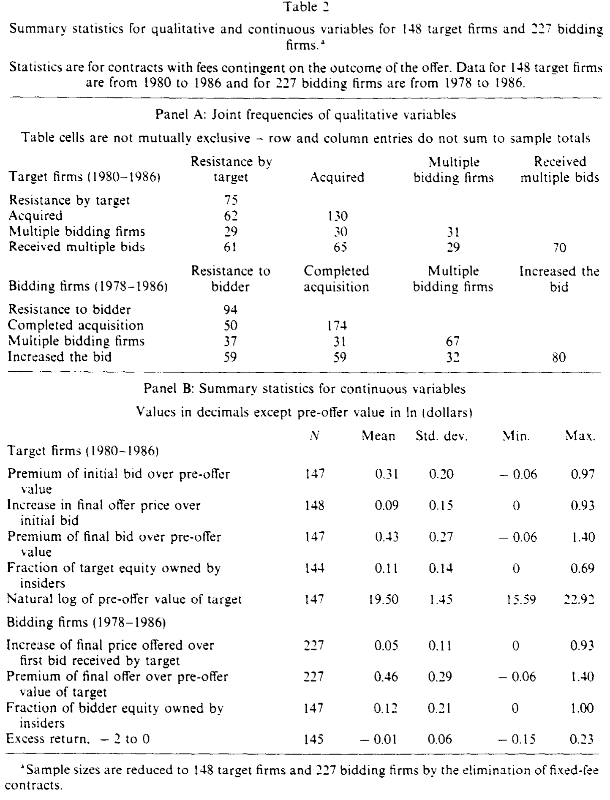
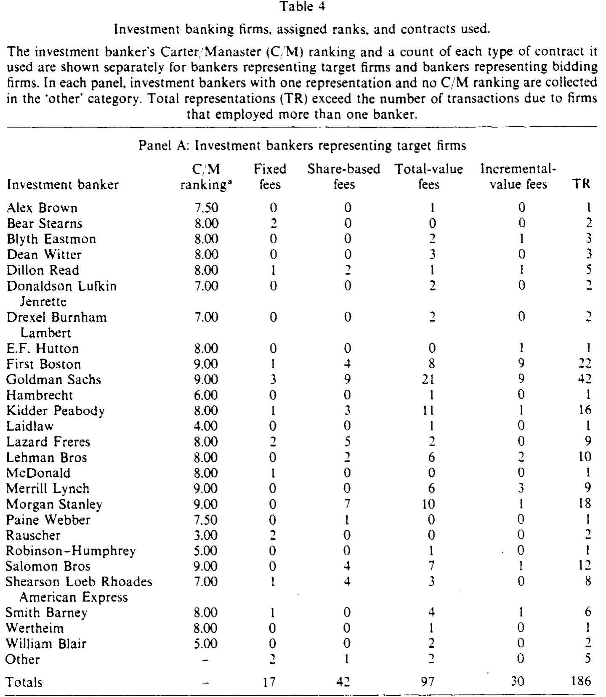
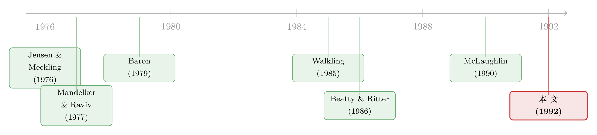

付钱的「形状」：一纸投行合同，如何写进了一场收购的结局
本文读的是 McLaughlin (1992, Journal of Financial Economics)：在 1978–1986 年的要约收购里，公司付给投资银行的费用，并不是一个简单的数字，而是一条形状各异的收益函数——是按「成交与否」给，还是按「成交价高低」给，还是「不管结果」固定给——这条曲线替银行写好了激励。作者据此检验「用合同来解代理问题」到底有多灵，结论是诚实的两个字：部分有效。
1 一个被忽略的角色
公司被人盯上要约收购（tender offer）的时候，舞台中央站着两个人：举牌的收购方，和被举牌的目标公司。聚光灯打在他们身上——溢价多少、董事会抵不抵抗、毒丸放不放。可在聚光灯照不到的地方，还坐着第三个人：投资银行。
它替目标公司估值、找白衣骑士、设计防御；它替收购方挑标的、谈条件、组织敌意收购。它几乎决定了这笔交易往哪个方向走。但有意思的是，这个几乎能左右结局的人，自己的利益未必和雇主一致。商业媒体早就吵翻了天，说投行和客户之间有数不清的利益冲突 [Petre (1986)]。
那么，怎么管住这个人？
最直接的工具，其实就藏在那张谁都懒得细看的费用合同里。一家公司付钱给投行的方式——付钱的「形状」——本身就是一根激励的杠杆。结构对了，它能把银行的目标拧到客户这一边；结构错了，银行就会朝着对自己最有利、却未必对你最有利的方向使劲。
这正是 McLaughlin 想问的那个看似朴素、其实很尖的问题：报酬的形式，到底重不重要（Does the form of compensation matter）？ 如果重要，我们就该看到：合同的类型，随着公司的目标和交易的条件而系统地变化；不同形状的合同，对应着不同的交易结局。
这篇论文的全部魅力，都在于把「付钱」这件事，从一个金额问题，翻译成了一个收益函数形状问题。金额只告诉你银行赚多少；形状才告诉你银行有动力去做什么。
2 三种合同，三条不一样的收益曲线
要理解这篇文章，先得把投行收费的「物种」认全。无论目标方还是收购方，样本里用的基本只有三类合同：按股付费（share-based）、按价值付费（value-based）、固定费（fixed fee）。它们的差别，不在贵贱，而在那条收益曲线的形状。
第一种，按股付费。 它是「成交股数」的线性或阶梯函数。比如 1982 年高盛替美国家庭用品公司（American Home Products）竞购 Brunswick，合同是一条直线：
$$ \text{fee} = 200{,}000 + 0.08 \times Q $$
每收一股加八分钱（\(Q\) 为收购股数）。又比如 1984 年 Beatrice 竞购 Esmark，与 Lazard 签的是阶梯函数：底薪 50 万，收够 50% 再加 300 万，超过 90% 或完成合并再加 100 万。
但作者敏锐地指出，这些函数形式上的花样其实无关紧要：样本里 90% 的要约要么全收、要么全不收；剩下 10% 部分完成的，没有一例触发了按股的或有付款。于是「按股付费」事实上塌缩成同一种东西——一笔底薪，外加一笔『成交了才给』的奖金。它给目标方和收购方的银行都装上了同一个念头：把交易做成。至于成交价是高是低，它一概不管。
第二种，按价值付费，又分两支。一支是更常见的总价值费（total-value fee），通常是成交总价值的线性函数。1984 年雀巢竞购 Carnation，后者与 Kidder Peabody 的合同是：12.5 万 + 成交价值的 0.5%。这种费用让银行既想把交易做成，又多少有点动力去抬价——只要抬价带来的更高报酬，盖得过它压低成交概率的损失。另一支是增量价值费（incremental-value fee）：只有当成交价高于一个基准价时，超出部分才计费。1985 年 Unidynamics 面对 Nortek 每股 20 美元的报价，答应给高盛和 Smith Barney 各 12.5 万，外加成交价中每股超过 20 美元那部分的 2.5%：
$$ \text{fee} = 125{,}000 + 0.025 \times \max(P - 20,\ 0) \times Q $$
它的激励一目了然：只有把价格顶上去，银行才赚得到那笔钱。难怪样本里没有一家收购方用这种合同——谁会出钱激励自己的顾问去抬高自己要付的价？
第三种，固定费。 不挂钩任何结果，用在那些「没什么可激励、也没什么本事可使」的场合：目标方只要一封意见书时，或者收购方早已实控目标、交易是「板上钉钉」时。因为它用在非典型场景、且通常不是真正的咨询费，作者把它排除在实证之外。
到这里，三条收益曲线的形状已经分明：按股费是一条「成交即跳升」的台阶，总价值费是一条向上倾斜的直线，增量价值费则是一条「过了基准价才起跳」的折线。形状，就是激励。
3 那个差一点就完美、却没人用的合同
故事讲到这儿，一个自然的问题冒出来了：既然费用合同能塑造激励，有没有一种合同，能把银行和股东的利益完美焊死？
作者给出了一个漂亮的思想实验。设想 Kidder Peabody 替 Carnation 服务，如果把它「不成交时的费用」也设成公司价值的 0.5%——和成交时那个 0.5% 一模一样——那么无论交易成与不成，Kidder Peabody 拿到的都等价于持有 Carnation 0.5% 的股权。它会被「逼着」内化股东的目标，因为它事实上就是个股东。
这听起来是代理问题的终极解药。可作者紧接着抛出反转：样本里没有任何一份合同这样设。
为什么？因为现实中的总价值费，超过 80% 都只在成交后才支付（见后文表 1 的或有比例）。要让这样一笔费用变成「不管结果如何都是公司价值固定百分比」的等价股权，要约里给股东的收益得超过 400%——而真实的要约收益远低于此 [Jensen and Ruback (1983)]。更深一层的原因在于激励银行出力：银行独自承担努力的全部成本，却只分到收益的一小块，所以要他卖力，就得给他高的边际报酬——也就是把钱押在「成交」这个结果上。
这是全文我最喜欢的一处张力：理论上能完美对齐的合同，恰恰因为「要激励努力」而不可能被采用。对齐利益和激励努力，在这里是一对此消彼长的矛盾。这也预告了文章的最终结论——合同从来不是代理问题的完整解。
还有一个反直觉的细节。你大概以为，目标方抵抗一桩敌意收购时，合同会重重地奖励银行「打退它」。可实际上，近一半的抵抗性要约里，目标方银行的费用，在原始敌意要约成交时反而更高——也就是说，合同并没有给银行「不惜一切代价打退所有报价」的激励。在样本里，只有两份合同把「不成交」的报酬设到最高：1985 年 CBS 应对 Turner Broadcasting 的敌意要约，以及 Phillips Petroleum 抵御 Icahn。这种「不愿激励银行赶尽杀绝」的克制，既符合价值最大化，也符合管理层对「因没能争取到足够报价而被股东告上法庭」的忌惮。
（关于管理层在要约里的私心究竟如何左右抵抗与否，可参见《老板该不该抵抗收购？答案写在他自己的股票里》；而关于「报酬形式」如何在并购里塑造高管行为，又可对照《奖金，奖的不是「赚到钱」，而是「说了算」》。）
4 真正关键的一步：供给与需求，何时才分得开
到这里，文章其实还只讲了「合同有不同形状」。但真正让它成为一篇严肃实证的，是下面这一步识别上的拿捏。
费用合同是双方谈出来的。客户公司（需求方）想要创造激励，让银行替自己卖力；银行（供给方）想要的，是用合同发信号、选择性接单，把自己的能力和私有信息变现。问题在于：很多时候，供需两方想要的是同一种合同。这时，模型是观察等价（observationally equivalent）的——你看到一份增量价值费，分不清它是公司「要的激励」，还是银行「想发的信号」。
但作者点出了一个巧妙的缝隙：当公司和银行的偏好发生冲突时，供给与需求的效应就在合同选择上分得开了。 最典型的就是投行声誉这个变量。
- 站在公司一边：如果银行声誉低、声誉资本无所谓损失，公司就更需要靠合同来创造激励——于是低声誉银行，反而对应更或有的合同（总价值费、尤其增量价值费）。
- 站在银行一边：高质量（高声誉）银行偏爱更挂钩结果的合同，好让自己的超额能力/信息最大化变现，同时发信号显示「我和别人不一样」——于是高声誉银行，反而对应更或有的合同。
两个方向正好相反。所以，只要看「声誉与合同或有程度」之间的相关方向，原则上就能判断到底是谁说了算。这就是这篇文章识别策略的精髓：不去硬解联立的供需，而是找到一个偏好相反的变量，让数据自己开口。
5 把激励写成一个方程
作者把上面这套逻辑，压缩成了一个合同选择的概率模型。一份合同被某公司与其投行采用的概率，是若干市场因素的函数。这就是论文的方程 (1)：
直觉是这样的：按股费和总价值费都激励「把交易做成」，所以目标管理层在初始报价有吸引力、在位价值低、自己也赞成要约时会偏爱它们；而增量价值费的报酬挂在「抬价」上，所以目标管理层只会在抵抗、或初始报价不够诱人、或在位价值高（管理层持股低）时去选它——而且银行也只在「更高报价确实可能促成收购」时才肯接。每个变量进入哪个方向，论文都给了基于激励的明确预测。控制变量则统一加入目标规模、是否多竞购者、是否抵抗——这是分析要约的惯例 [Demsetz and Lehn (1985); Walkling (1985)]。
方程 (1) 之后，作者还分别检验了第二、第三组假设：银行质量与费用水平（高质量银行在每类合同上都应实现更高费用，目标方里「高质量银行 × 增量价值费」应当费用最高），以及合同类型与要约结果（如果激励有效，合同形状应当系统地预测成交与否、报价是否被抬高）。
6 数据与那张关键的分布表
样本来自 1978–1986 年的要约收购：161 份目标公司合同（1980–1986）与 241 份收购方合同（1978–1986）。变量、模型设定见正文第 4 节，合同的分布则汇总在表 1。
几个值得记住的真实数字，几乎勾勒出了整套激励结构：
- 固定费用得极少：只有 8.1% 的目标公司、5.8% 的收购方用它。
- 目标方和收购方依赖完全不同的结果度量：收购方的费用大多挂在收购股数上（79.7%），目标方的费用大多挂在成交价值上（71.4%）；这种差异由卡方检验确认，
p < 0.0001。 - 或有部分占比极高：这些费用平均超过 80% 只在收购完成后才支付——这正是前文「等价股权」做不成的根源。
- 完成交易的平均费率：目标方
0.79%的要约价值，收购方0.59%。

Table 3
7 结果：诚实的「部分有效」
到了揭晓的时刻——形状真的写进了结局吗？
作者的回答，没有华丽的转折，反而格外克制：结果是混合的（mixed）。 我按文章自己给出的结论，分三层说清楚（需说明：本文所据的论文节选未包含第 5 节回归表的具体系数，故下面只忠实转述作者的定性结论，不杜撰任何数值）。
第一层，公司这边。 与价值最大化一致的是，没有证据表明公司在合同选择上系统性地犯错。部分检验里，能看到「公司目标 ↔ 合同激励」「激励 ↔ 要约结果」之间的关联；但另一些检验里，这种关联又找不到。
第二层，银行这边。 有一些证据显示合同选择与银行质量相关——高质量银行确实更倾向挂钩结果的合同；但没有证据表明这为银行带来了更高的期望报酬。换句话说，银行用合同「发了信号」，却没能把信号兑成超额的钱。

Table 4
第三层，也是全文的落点。 把两边合起来看：对公司和银行而言，合同都只是代理问题的部分解（only part of the solution）。合同确实是双方都在使用的工具，确实影响了要约结果——但它远不能把代理冲突一笔抹平。
这就是反转：文章一路把「付钱的形状」论证得如此精巧、如此富有激励含义，最后却老老实实地告诉你——它只解决了一部分问题。 在我看来，这种不把结论说满的诚实，恰恰是它最值得敬重的地方。
8 文献脉络
这条线的源头，是把「银行—公司」关系当成一个契约设计问题来建模的传统。但早期的注意力几乎全在证券发行上：Mandelker and Raviv (1977) 分析最优承销合同，Baron (1979, 1982)、Baron and Holmstrom (1980) 研究信息不对称下投行合同的激励与委托问题，Rock (1986) 给出新股折价的经典解释。与之并行的，是一条声誉的实证线：Beatty and Ritter (1986)、Carter and Manaster (1990) 论证了承销商声誉的价值，以及银行会主动保护声誉。

可一旦把镜头转向公司控制权争夺，文献就稀薄得多。Walkling (1985) 实证发现，付给招揽经纪人的费用显著影响收购方的成功概率——这是把「费用 ↔ 结果」连起来的先声。作者本人的前作 McLaughlin (1990) 则系统描述了要约收购里的投行费用与合同激励。更远的背景，是 Jensen and Meckling (1976) 奠定的代理框架，以及一大批关于「报酬与公司行为相关」的实证证据。
本文 (1992) 的位置就清晰了：它把证券发行里成熟的「合同—激励—信号」分析，移植到要约收购这个几乎没人系统做过的战场上，并第一次试图用「供需偏好冲突」的识别思路，去回答「合同到底能不能解代理问题」。它既是 McLaughlin (1990) 的自然续篇，也是对 Walkling (1985) 那条「费用影响结果」线索的理论化深化。
评论与延伸（Q&A + 研究方向）
(a) 几个可能的疑问
Q：这和「投行的 7% 固定费」那类研究有什么本质区别？
区别在「形状」而非「水平」。IPO 文献（如关于固定费率的讨论，见《新股发行费为什么总是不多不少的 7%？》）关心的是费率高低与竞争。本文关心的是费用作为收益函数的形状如何创造不同的激励方向——成交、抬价、还是不作为。同样一笔钱，挂在不同结果上，逼出的行为天差地别。
Q：既然「等价股权」合同能完美对齐银行与股东，为什么样本里一个都没有？
因为「对齐利益」和「激励努力」是一对矛盾。要银行卖力，就得把报酬重重押在「成交」这个结果上（实际中 >80% 的费用都是成交或有的）；而要做成等价股权，又得把「不成交」的报酬也设成公司价值的固定百分比。两者只能取其一。作者还算过：要让总价值费天然变成固定股权比例，股东收益得超过 400%，现实里远达不到。
Q：「合同形式影响结果」会不会是反向因果——是对结果的预期决定了合同，而不是合同决定了结果？
这正是本文识别上最大的隐忧，作者其实也心知肚明：合同是双方对未来的预期谈出来的，所以「合同 ↔ 结果」的相关，天然混着内生性。文章的应对是「观察等价」框架——承认很多情形下供需想要同一种合同、分不开，只在偏好冲突的变量（如声誉）上才主张能识别供给与需求。这是诚实的，但也意味着「合同→结果」的因果，本文并未真正干净地建立。
Q：抵抗性要约里，近一半合同竟然「成交反而给银行更多钱」，这不矛盾吗？
不矛盾，反而很说明问题。它说明目标公司并不真想激励银行「赶尽杀绝、打退一切报价」——那样会暴露在「未尽力争取足够报价」的股东诉讼风险下。于是即便是抵抗，合同也往往保留「若最终成交则多给」的条款。这与价值最大化、以及管理层的法律忌惮都一致。
Q：「混合结果」是不是等于「没有结论」？这篇到底贡献了什么？
不是。它的贡献有三：一是把投行收费类型化为三条收益曲线，并讲清每条曲线的激励含义；二是提出用「偏好冲突变量」分离供需的识别思路；三是给出一个克制而重要的判断——契约只是代理问题的部分解。在一个被「治理万能论」充斥的年代，这个「部分」二字本身就是结论。
Q：投行声誉到底是「质量信号」还是「市场势力」，本文怎么处理？
作者把两者捆在一起：高声誉既指向高质量（因而更想用或有合同发信号），又意味着更强的市场势力（因而更有本事谈到自己想要的合同）。这其实是本文一个未完全拆开的结——「高声誉 ↔ 或有合同」的相关，可能同时由信号动机和议价能力驱动，文章并未把这两条供给侧渠道再细分。
(b) 几个可能的研究问题与提案
-
把「合同形状—激励」搬到公司债承销。 【经济故事】债券承销费同样有「固定 retainer / 利差式 spread / 成功费」等不同形状，它们应当系统地影响发行定价、配售努力与是否撤回（参见《新债上市第一笔成交，凭什么白赚 47 个基点？》 里对承销激励的讨论）。 【可行性】中。SDC/Mergent FISD 有发行与承销人数据，难点在费用合同条款多不公开，需要手工从招股说明书或承销协议中提取费用结构。识别可借鉴本文的「偏好冲突变量」思路。
-
外资持有人与卖方顾问合同的选择。 【经济故事】外资机构股东占比高的目标公司，是否更倾向选择高声誉、更或有的顾问合同（因为外资更难直接监督管理层，更依赖合同与声誉）。这把「外资—监督—合同」串成一条新链。 【可行性】中。需并购顾问费用披露 + 外资持股（如 13F/各国持股库）。识别可用指数纳入等外生持股冲击。
-
困境出售里的顾问费与成交速度/折价。 【经济故事】在流动性紧张、必须快速脱手的困境并购（distressed M&A）中，「成交或有」的费用结构会不会逼着顾问以更大的价格折让换取更快成交？这正是「形状激励」在流动性维度上的延伸。 【可行性】中偏低。困境交易样本小、费用条款更隐蔽，但破产法庭文件（顾问费需法院批准）反而提供了一个公开的费用数据来源，识别上有想象空间。
-
用现代 deal-level 费用披露重做识别。 【经济故事】今天的并购顾问费披露（success fee vs. retainer 的拆分）远比 1980 年代细，配合合同条款文本化，可以做一次更干净的「合同选择 ↔ 结果」识别，直面本文的内生性隐忧。 【可行性】高。数据可得性大幅改善，文本挖掘技术成熟；主要工作量在条款标注与构造「偏好冲突」工具变量。
我的判断
贡献。 这篇文章最持久的价值，不在某个系数，而在它教会我们用一种新眼光看「付钱」——把报酬从金额还原成收益函数的形状，再从形状读出激励的方向。它对三类合同的拆解（尤其「按股费事实上塌缩成成交奖金」「等价股权合同因激励努力而不可行」这两处洞见）至今读来仍很锋利。
对识别的担忧。 本文的软肋也很清楚：合同是预期的产物，「合同 ↔ 结果」的相关天然内生；作者靠「观察等价 / 偏好冲突」的框架做了诚实的让步，但这也意味着它建立的更多是关联与一致性，而非干净的因果。声誉变量身上「信号」与「市场势力」两条供给侧渠道也未被拆开。
后续想看到的。 我最想看到的，是用今天更细的 deal-level 费用披露 + 合同文本，去重做第 3 组假设（合同形状是否真的预测结果），并把它推广到公司债承销与困境出售——因为那里既有形状各异的费用结构，又有破产法庭这样现成的公开费用数据源，恰好能补上本文当年「合同条款看不全」的最大遗憾。
参考文献
Baron, David P. (1979). The incentive problem and the design of investment banking contracts. Journal of Banking and Finance 3, 157–175.
Baron, David P. (1982). A model of the demand for investment banking advising and distribution services for new issues. Journal of Finance 37, 955–976.
Baron, David P. and Bengt Holmstrom (1980). The investment banking contract for new issues under asymmetric information: Delegation and the incentive problem. Journal of Finance 35, 1115–1138.
Beatty, Randolph and Jay Ritter (1986). Investment banking, reputation, and the underpricing of initial public offerings. Journal of Financial Economics 15, 213–232.
Carter, Richard and Steven Manaster (1990). Initial public offerings and underwriter reputation. Journal of Finance 45, 1035–1067.
Demsetz, Harold and Kenneth Lehn (1985). The structure of corporate ownership: Causes and consequences. Journal of Political Economy 93, 1155–1177.
Jensen, Michael C. and William H. Meckling (1976). Theory of the firm: Managerial behavior, agency costs and ownership structure. Journal of Financial Economics 3, 305–360.
Jensen, Michael C. and Richard S. Ruback (1983). The market for corporate control: The scientific evidence. Journal of Financial Economics 11, 5–50.
Mandelker, Gershon and Artur Raviv (1977). Investment banking: An economic analysis of optimal underwriting contracts. Journal of Finance 32, 683–694.
McLaughlin, Robyn M. (1990). Investment banking contracts in tender offers: An empirical analysis. Journal of Financial Economics 28, 202–232.
McLaughlin, Robyn M. (1992). Does the form of compensation matter? Investment banker fee contracts in tender offers. Journal of Financial Economics 32, 223–260.
Rock, Kevin (1986). Why new issues are underpriced. Journal of Financial Economics 15, 187–212.
Walkling, Ralph A. (1985). Predicting tender offer success: A logistic analysis. Journal of Financial and Quantitative Analysis 20, 461–478.